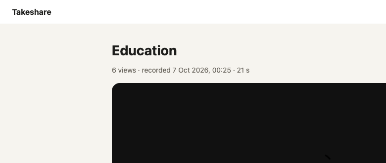
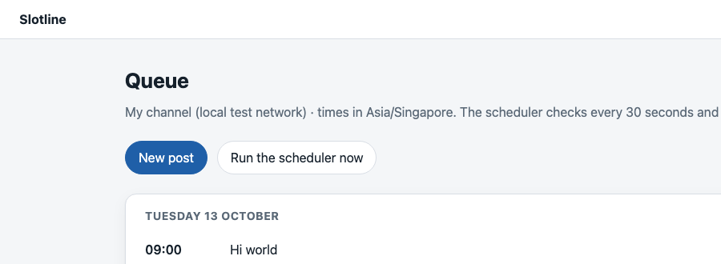

Cooked or Cracked
Ten apps worth
cloning in an hour.
A viral reel says Claude can clone any app so you never pay a subscription again. We tested it on two apps we pay for. Here is what an hour really gets you, which ten features are worth that hour, and the free skills to run it.
what is inside
- Rebuild what an app does, never what it ownsp2
- Two clones, timed, with their honest scoresp2
- Run the hour with seven free skillsp3
- Who this is for, and who it is not forp3
- Worksheet: the ten features, sizedsep.
free skills7
minutes to a compiled app6
parity score, screen recorder63
Made by Henry Chua for the people who comment CLONE. Tested 7 October 2026 on a Mac with Claude Code, Node 24 and Python 3.9.
the receipt
Not shippable yet.
That is the parity tool's own verdict on both clones after one hour. The feature you pay for ran. The app you pay for did not.
Cooked or Cracked
One feature, on your own disk.
"Clone any app" sounds like a whole product. What an hour gets you is one feature, running on your own machine. That is still worth doing when the feature is the only reason you pay. A few words you will meet below: the slice is the smallest version of a feature that still works end to end; parity is how much of the original's feature list the clone has, out of 100; must-haves are the features a clone cannot ship without.
rebuild this
What the app does
The flow, the screens, the data behind them. A booking page, a recorder, a queue. Written fresh, in your own words, with your own name on it.
leave this alone
What the app owns
Licensed content (a music catalogue), its network of users, its partner access to other platforms, hardware, regulated licences. Rebuilding those is a legal problem.
size first Four sizes, decided before you start
Sone sittingOne flow, one person, your machine. The hour.
Ma weekendOne real integration, real uploads, a second user.
LweeksSeveral integrations, payments, reliability.
XLrescope itA canvas editor, a spreadsheet engine, a streaming catalogue.
the test Two apps we pay for, one hour, the clock on screen
screen recorder, share page

6 min from the first command to a compiled app · 7 screens, 3 flows, 22 features mapped · parity
63 / 100, 6 of 7 must-haves · size
S for the slice. The original's free plan stops at
25 videos and 5 minutes each; this one has no time cap.
post queue, the queue view

8 min to a working queue with weekly slots, a calendar and a scheduler · parity
66 / 100, 5 of 8 must-haves · size
S for the slice,
L for what you pay for. It posts to a local test network only. Posting to Instagram or LinkedIn needs your own developer app and the platform's review;
the original handles that publishing for you, which is what the
US$5 a month per channel buys.
So, cooked or cracked? The clone skills do what they say for one feature on your machine. "Clone any app, never pay again" does not survive the hour: anything that needs the cloud, a platform partner or licensed content stays theirs. Pick features that live on your own disk. The worksheet lists ten.
Cooked or Cracked
Run the hour with seven free skills.
The pack sizes the job first, maps one feature, plans a local stack, builds the slice, reads what the original's users dislike, and gives you an honest score. MIT licence, no sign-up, no API key.
1
Scan, then install

about 3 min
Open the Claude desktop app, click the Code tab (Claude working in a folder you pick) and choose an empty folder. Paste the three grey lines under these steps into the chat. Line 1 downloads the pack, line 2 checks it for anything nasty, line 3 copies the skills into the folder Claude reads them from.
Line 2 needs NVIDIA's free SkillSpector installed first (one command on its page). Read a HIGH result before you believe it: a word list inside a lint tool can trigger one.
2
Size the app you pay for
about 5 min
Name the one feature you actually use. The skill reads the help centre, pricing page and store listing (never the app's code or anything behind a login) and prints S, M, L or XL with reasons. If it says L or XL, cut the slice until it says S.
Most paid apps come back L or XL as a whole and S for the one feature you use (sizes on page 2).
about 60 min
Map, plan, build the slice, pull 100 App Store reviews, score it. The runbook writes clone/receipts.md with the clock at each stage and what a person still has to do: the real screen picker, the phone-width check, the terms.
You need Node 22.13 or newer for the built-in SQLite (older Node falls back to a JSON file) and Python 3.9 or newer. Nothing to pip install.
git clone https://github.com/EasyAIHenry/one-hour-clone.git
skillspector scan --no-llm one-hour-clone
cp -r one-hour-clone/skills/* ~/.claude/skills/
clone-sizeS to XL
→
clone-mapfeature list
→
clone-planlocal stack
→
clone-buildthe slice
→
clone-reviewswhat users dislike
→
clone-scoreparity line
→
clone-hourtimer, receipts
copy these The prompt pack
Size itbefore anything else
Size [the app] for me. The one feature I pay for is [the feature]. Public pages and my own account only. Tell me S, M, L or XL and why, and what the app owns that we leave alone.
Run the hour on [the feature] from [the app]. Local only: Next.js, SQLite, files on disk, no accounts, no payments. Fresh code and fresh copy, nothing of theirs. Write the receipts as you go and stop at 60 minutes.
Read the reviewsthe honest version
Pull the App Store reviews for [the app] with the pack's review tool, 2 pages (about 100 reviews), group them into themes with the [video] preset (the theme list for my app's category), and tell me the sample size and which themes are thin.
the honest bit Who this is for, and who it is not for
you pay for one feature
Run the hour
A recorder, a queue, a booking page, a tracker. One flow, on your disk, no cloud. The ten in the worksheet all fit.
you pay for the network or the catalogue
Keep paying
Streaming, social posting to real platforms, anything with licensed content or a partner API. The clone would be a shell. Their price is for the part you cannot rebuild.
about the details in this guide
Prices, limits and plan details were checked on 7 October 2026 on the pages linked in each step. The companies named change pricing, limits and terms at their own discretion, sometimes weekly. Treat every figure here as a snapshot on that date, not a quote, and confirm on the linked page before you pay. Check the terms of any app you rebuild. None of this is legal advice. I am not affiliated with any of these companies and I do not earn from these links.
Henry Chua.